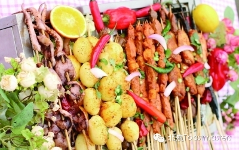
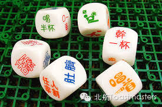
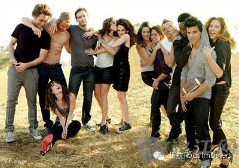

Time：April. 26 Saturday
Location：Shangzhuang, Haidian District
Let's go outing！
This time we prepared self-help barbecue:

interesting games:

Handsomes and Pretties:

as well as great cook!
Before it gets too hot, forget all the troubles! Let's go for a wonderful Saturday!
Warning: you might fall in love with our great outing!
You need to prepare：
Yourself
Other handsomes or pretties (if there are any)
No Need to Bring Food (We will order group purchase on the Internet)!
How to participate:
Tell our contacts before Friday night by our Wechat subscription, Email or Short messages.
We will gather at 8:30a.m.
Venue：The big door of Beihang Dayuncun department (opposite to the Exit F of Zhichunlu subway station)
Distance：Less than 1 hour totally
code word：“唉你咋才来呢？”"ai ni za cai lai ni?"
Contacts：
Deron：18001253933
Monk：15120099188
Email: beihangtmc@126.com
Fee：about 100 yuan/person (including barbecue and traffic) pay the actual amount in the end of outing is Ok.
====分=====割=====线====
老朋友：点击右上角按钮分享到朋友圈
新朋友：点击标题下方的【北航Toastmasters】关注我们查看历史消息
向还不了解“北航Toastmasters"的朋友们介绍一下：这个组织专注于提升演讲能力和领导能力。每周五19:30在北航新主楼A212举办meeting.
我们欢迎每一个感兴趣的朋友前来做客!
路线：回复r即可查看路线地图